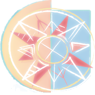

- Virtual pad : send MIDI notes and control change messages.
- Get and send programs from and to your LPD8.
- Load and save programs from and to your computer.
- Show MIDI messages sent by LPD8.
- Display a visual feedback.
Help will be in the Freepad wiki.
